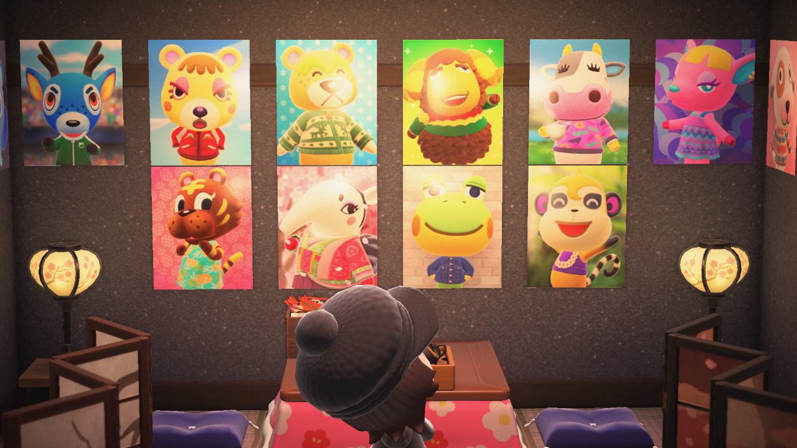
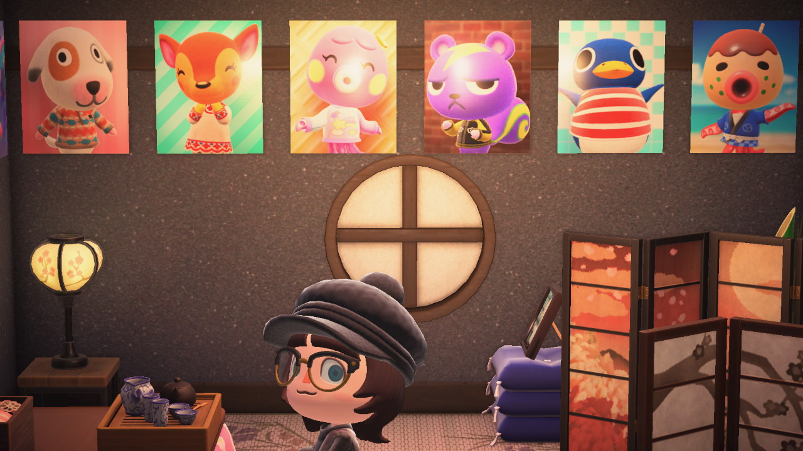
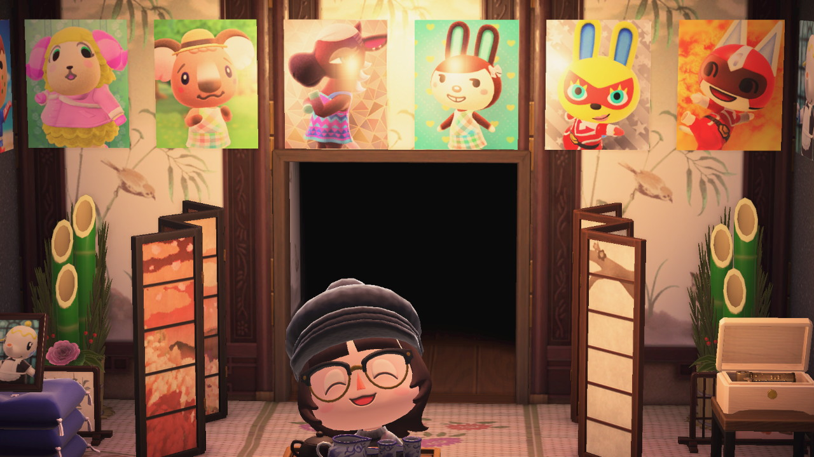
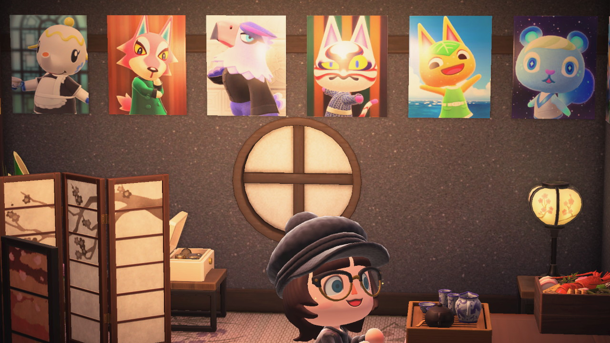

Villagername

Meow

B-day

Dream job


this should never be visible. I am worried the javascript might be broken
Welcome to my timeline tearoom
My favorite part of my house is the timeline tearoom, where I have made a complete timeline of every villager to live on Snowcape. Navigate the room with the arrows. Click the posters(or me) to see a profile for each villager. Every image in the profils are also clickable. Check it out.